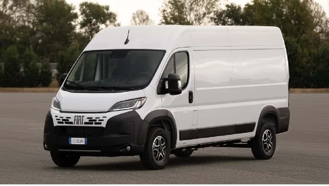

Mağazadan alınan ürün
Bursa’daki satıcının teslim adresini ve ürünün paketli ölçülerini alın. Ürün hazır olma saati ile mağazanın yükleme kabul aralığını birlikte paylaşın.
Bursa’dan Ankara’ya işyeri kolileri, satın alınmış ürün veya az miktarda ev eşyası gönderin. Bursa’daki alım noktasını, yükün hazır olacağı saati ve Ankara’da teslim alacak kişiyi tek bir planda buluşturalım.
7/24 iletişim: 0544 868 63 58 · Sefer tarihi ve teslim aralığı görüşmede teyit edilir.
Gönderinin içeriği, boyutu ve iki adresteki koşullar üzerinden planlama.
Bursa Ankara ambar nakliye; bir mağazadan alınan ürün, işletmeler arasındaki koliler veya evden gönderilen birkaç parça eşya için değerlendirilebilir. Bu yöndeki ilk bilgi yükün Bursa’nın hangi ilçesinde bulunduğudur. İlçe ve işletme adı, alım adresinin yerine geçmez; konum, açık adres ve ilgili kişiyle teklif talebinizi tamamlayabilirsiniz.
Küçük hacimli yüklerde parsiyel taşıma ve panelvan seçeneklerini eşya bilgisine göre değerlendiriyoruz. Ankara’daki varış adresi bir işyeri de olabilir, katlı bir konut da. Teslimin kapsamını önceden belirlemek, alıcının beklentisini ve taşıma planını aynı noktada buluşturur. Paketleme, yükleme desteği veya birden fazla alım ihtiyacını teklif isterken ayrıca belirtin.

Teklif öncesi doğru eşya bilgisi, uygun araç ve işçilik kapsamını değerlendirmeyi kolaylaştırır.
Bursa’daki satıcının teslim adresini ve ürünün paketli ölçülerini alın. Ürün hazır olma saati ile mağazanın yükleme kabul aralığını birlikte paylaşın.
Ürün, numune veya kutulanmış ekipman gönderilerinde koli sayısını, yaklaşık ağırlığı ve alıcı yetkiliyi belirtin. Karışmaması için her paketin kime gittiğini işaretleyin.
Koltuk, masa veya kişisel eşya kolilerinde alım ve teslim katlarını birlikte yazın. Çizilmeye açık yüzeyler ve kırılabilir parçalar için ambalaj ihtiyacını önceden değerlendirin.
Elektronik cihazlar, cam içeren ürünler ve hassas yüzeyli mobilyalar için yalnızca koli sayısı yeterli olmayabilir. Ürün türünü ve mevcut ambalajın durumunu fotoğrafla paylaşın. Paket içinde hareket edebilen parçaların sabitlenmesi ve hassas paketlerin işaretlenmesi önemlidir. Orijinal kutu bulunmuyorsa gerekli ambalajın nasıl hazırlanacağını sevkiyattan önce görüşün; yükün taşımaya hazır hâli üzerinden değerlendirme yapalım.
Alım ve teslim ilçesi, kat, asansör ve araç erişimi teklifin kapsamına yön verir.
Osmangazi, Nilüfer ve Yıldırım’daki yükleme noktaları için ilçe, mahalle ve bina erişimi bilgisi gerekir. Kestel, Gürsu, Gemlik veya diğer Bursa ilçelerinden alım isteniyorsa bu ayrıntıyı ilk mesajda paylaşın. İnegöl’deki üretici ve mağaza çıkışlı mobilya yükleri için İnegöl Ankara ambar nakliye sayfasındaki hazırlık bilgileri daha doğrudan yardımcı olur.
Ankara’ya gelen yükte Çankaya, Yenimahalle, Etimesgut, Keçiören, Mamak, Sincan veya başka bir ilçedeki açık teslim adresi esas alınır. İşyerinde yetkili bulunması, apartmanda asansör kullanımı ve site giriş koşulları teslim planını etkileyebilir. Alıcı telefonunu ve teslim kabul aralığını önceden iletin; son aşamada yeni bir adres varsayımı oluşmasın.
İnegöl çıkışlı mobilyalar için İnegöl Ankara hattını inceleyin →
Yük ve adres bilgisine göre taşıma bedelini, işçilik kapsamını ve sefer uygunluğunu birlikte netleştirelim.
Bursa Ankara nakliye fiyatı için kaç farklı noktadan alım yapılacağı önemlidir. Tek mağaza çıkışı ile farklı ilçelerdeki birkaç adresten toplanacak yükün planı farklı olur. Toplam hacim ve Ankara’daki teslim kapsamını birlikte paylaşın.
Teklif isterken paketli eşya fotoğraflarını ve listenizi WhatsApp’tan iletebilirsiniz. Yükün hazır olacağı gün ile istediğiniz teslim aralığını ayrı ayrı yazın. Paketleme, söküm, montaj veya kata taşıma beklentiniz varsa görüşmede belirtin; kapsamı birlikte değerlendirelim.
Güzergâhınız için fiyat isteyinHer iki taraftaki bilgileri tek bir taşıma planında birleştirelim.
Eşya listesini, paket ölçülerini ve fotoğrafları alım ve teslim adresleriyle birlikte paylaşın.
Araç seçeneği, fiyat, işçilik kapsamı ve uygun sefer tarihi görüşmede değerlendirilir.
Yükün hazır olduğu gün, ilgili kişi ve paket listesiyle alım randevusu koordine edilir.
Alıcı, teslim edilen paketleri listeyle karşılaştırır; sevkiyat planındaki adreste teslim süreci tamamlanır.
Yükünüzün ayrıntılarını görüşmek için telefon veya WhatsApp’tan ulaşabilirsiniz.
0544 868 63 58Koli, kutulanmış ürün ve küçük hacimli işyeri yükleri için teklif isteyebilirsiniz. İçerik, adet, ölçü, ağırlık ve tarih bilgisiyle uygun sevkiyat seçeneği değerlendirilir.
Satıcının açık yükleme adresini, iletişim bilgisini, ürünün hazır olma tarihini ve paketli ölçülerini paylaşın. Satıcıdan teslim alınacak ürün ve alım koşulları görüşmede netleştirilir.
Kata taşıma, bina girişi teslimi ve işçilik kapsamı teklif sırasında ayrıca belirlenir. Her iki adresteki kat, asansör ve araç yanaşma bilgisini ileterek istediğiniz teslim şeklini açıkça belirtin.
İnegöl Bursa’ya bağlıdır; üretici veya mağazadan mobilya alımı için İnegöl Ankara sayfasından ilerleyebilirsiniz. Bu yönde paket listesi ve hazır olma tarihine özel hazırlık bilgileri bulunur.
Formdaki bilgiler mesaj olarak hazırlanır. WhatsApp’ta kontrol edip gönderin; ardından eşya fotoğraflarını ekleyebilirsiniz.
Gidiş ve dönüş yönünü seçin. Her hat için yük hazırlığı, adres bilgisi ve teklif ayrıntılarına ulaşın.
Düzenli hatlar için güncel sefer günü ve araç uygunluğu yükünüze göre teyit edilir. Diğer illerde alım ve teslim talepleri tarih ve adres bilgisiyle değerlendirilir.